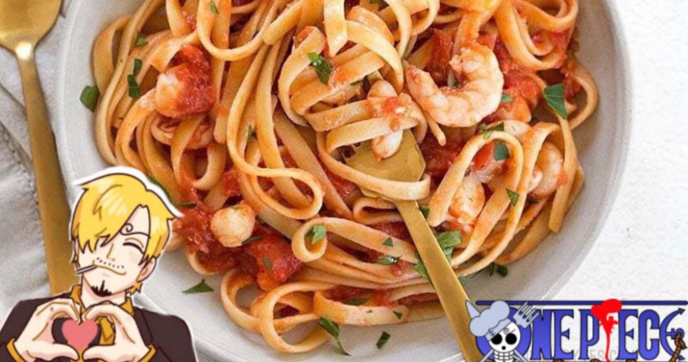
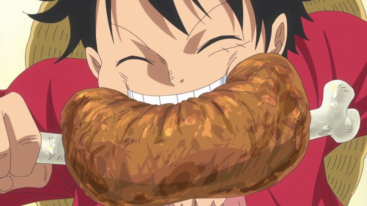

Onigiri Chihiro
Studio Ghibli
Bolinhos de arroz japoneses recheados, como no filme A Viagem de Chihiro.
Anime
Japonesa
 Chef Miyazaki
Chef Miyazaki
Profiterole
Mash Burnedead
Bolinho de massa choux recheado com creme e coberto de chocolate, como no anime Mashle.
Anime
Sobremesas
 Chef Mash
Chef Mash

Massa de Frutos do Mar do Sanji
 Sanji
Sanji
Massa de Frutos do Mar do Sanji
One Piece
Massa al dente com frutos do mar frescos e molho de vinho branco.
One Piece
Frutos do Mar

Carne-no-Osso do Luffy
 Monkey D. Luffy
Monkey D. Luffy
Carne-no-Osso do Luffy
One Piece
Costela de porco assada com mel e especiarias, estilo Baratie.
One Piece
Carnes

Café da manhã do Howl (Studio Ghibli)
Ovos fritos, bacon crocante e pão dourado do Castelo Animado.
Studio Ghibli
Café da Manhã